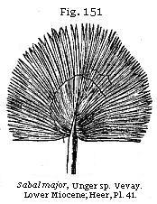
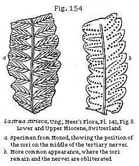
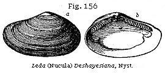

The Student’s Elements of Geology
Lower Miocene Strata of France. — Line between Miocene and Eocene. — Lacustrine Strata of Auvergne. — Fossil mammalia of the Limagne d’Auvergne. — Lower Molasse of Switzerland. — Dense Conglomerates and Proofs of Subsidence. — Flora of the Lower Molasse. — American Character of the Flora. — Theory of a Miocene Atlantis. — Lower Miocene of Belgium. — Rupelian Clay of Hermsdorf near Berlin. — Mayence Basin. — Lower Miocene of Croatia. — Oligocene Strata of Beyrich. — Lower Miocene of Italy. — Lower Miocene of England. — Hempstead Beds. — Bovey Tracey Lignites in Devonshire. — Isle of Mull Leaf-Beds. — Arctic Miocene Flora. — Disco Island. — Lower Miocene of United States. — Fossils of Nebraska.
Line between Miocene and Eocene Formations.—The marine faluns of the valley of the Loire have been already described as resting in some places on a fresh-water tertiary limestone, fragments of which have been broken off and rolled on the shores and in the bed of the Miocene sea. Such pebbles are frequent at Pontlevoy on the Cher, with hollows drilled in them in which the perforating marine shells of the Falunian period still remain. Such a mode of superposition implies an interval of time between the origin of the fresh-water limestone and its submergence beneath the waters of the Upper Miocene sea. The limestone in question forms a part of the formation called the Calcaire de la Beauce, which constitutes a large table-land between the basins of the Loire and the Seine. It is associated with marls and other deposits, such as may have been formed in marshes and shallow lakes in the newest part of a great delta. Beds of flint, continuous or in nodules, accumulated in these lakes, and aquatic plants called Charae, left their stems and seed-vessels imbedded both in the marl and flint, together with fresh-water and land shells. Some of the siliceous rocks of this formation are used extensively for mill-stones. The flat summits or platforms of the hills round Paris, and large areas in the forest of Fontainebleau, as well as the Plateau de la Beauce, already alluded to, are chiefly composed of these fresh-water strata. Next to these in the descending order are marine sands and sandstone, commonly called the Gres de Fontainebleau, from which a considerable number of shells, very distinct from those of the faluns, have been obtained at Etampes, south of
Paris, and at Montmartre and other hills in Paris itself, or in its suburbs. At the bottom of these sands a green clay occurs, containing a small oyster, Ostrea cyathula, Lam., which, although of slight thickness, is spread over a wide area. This clay rests immediately on the Paris gypsum, or that series of beds of gypsum and gypseous marl from which Cuvier first obtained several species of Palæotherium and other extinct mammalia.*
At this junction of the clay and the gypsum the majority of French geologists have always drawn the line between the Middle and Lower Tertiary, or between the Miocene and Eocene formations, regarding the Fontainebleau sands and the Ostrea cyathula clay as the base of the Miocene, and the gypsum, with its mammalia, as the top of the Eocene group. I formerly dissented from this division, but I now find that I must admit it to be the only one which will agree with the distribution of the Miocene mammalia, while even the mollusca of the Fontainebleau sands, which were formerly supposed to present at preponderance of affinities to an Eocene fauna, have since been shown to agree more closely with the fossils of certain deposits always regarded as Middle Tertiary at Mayence and in Belgium. In fact, we are now arriving at that stage of progress when the line, wherever it be drawn between Miocene and Eocene, will be an arbitrary one, or one of mere convenience, as I shall have an opportunity of showing when the Upper Eocene formations in the Isle of Wight are described in the sixteenth chapter.
Lower Miocene of Central France.—Lacustrine strata, belonging, for the most part, to the same Miocene system as the Calcaire de la Beauce, are again met with farther south in Auvergne, Cantal, and Vélay. They appear to be the monuments of ancient lakes, which, like some of those now existing in Switzerland, once occupied the depressions in a mountainous region, and have been each fed by one or more rivers and torrents. The country where they occur is almost entirely composed of granite and different varieties of granitic schist, with here and there a few patches of Secondary strata, much dislocated, and which have suffered great denudation. There are also some vast piles of volcanic matter, the greater part of which is newer than the fresh-water strata, and is sometimes seen to rest upon them, while a small part has evidently been of contemporaneous origin. Of these igneous rocks I shall treat more particularly in the sequel.
The study of these regions possesses a peculiar interest very distinct in kind from that derivable from the investigation
* Bulletin, 1856, Journ., vol. xii, p. 768.
either of the Parisian or English Tertiary areas. For we are presented in Auvergne with the evidence of a series of events of astonishing magnitude and grandeur, by which the original form and features of the country have been greatly changed, yet never so far obliterated but that they may still, in part at least, be restored in imagination. Great lakes have disappeared—lofty mountains have been formed, by the reiterated emission of lava, preceded and followed by showers of sand and scoriæ—deep valleys have been subsequently furrowed out through masses of lacustrine and volcanic origin—at a still later date, new cones have been thrown up in these valleys—new lakes have been formed by the damming up of rivers—and more than one assemblage of quadrupeds, birds, and plants, Eocene, Miocene, and Pliocene, have followed in succession; yet the region has preserved from first to last its geographical identity; and we can still recall to our thoughts its external condition and physical structure before these wonderful vicissitudes began, or while a part only of the whole had been completed. There was first a period when the spacious lakes, of which we still may trace the boundaries, lay at the foot of mountains of moderate elevation, unbroken by the bold peaks and precipices of Mont Dor, and unadorned by the picturesque outline of the Puy de Dome, or of the volcanic cones and craters now covering the granitic platform. During this earlier scene of repose deltas were slowly formed; beds of marl and sand, several hundred feet thick, deposited; siliceous and calcareous rocks precipitated from the waters of mineral springs; shells and insects imbedded, together with the remains of the crocodile and tortoise, the eggs and bones of water-birds, and the skeletons of quadrupeds, most of them of genera and species characteristic of the Miocene period. To this tranquil condition of the surface succeeded the era of volcanic eruptions, when the lakes were drained, and when the fertility of the mountainous district was probably enhanced by the igneous matter ejected from below, and poured down upon the more sterile granite. During these eruptions, which appear to have taken place towards the close of the Miocene epoch, and which continued during the Pliocene, various assemblages of quadrupeds successively inhabited the district, among which are found the genera mastodon, rhinoceros, elephant, tapir, hippopotamus, together with the ox, various kinds of deer, the bear, hyæna, and many beasts of prey which ranged the forest or pastured on the plain, and were occasionally overtaken by a fall of burning cinders, or buried in flows of mud, such as accompany volcanic eruptions.
Lastly, these quadrupeds became extinct, and gave place in their turn to the species now existing. There are no signs, during the whole time required for this series of events, of the sea having intervened, nor of any denudation which may not have been accomplished by currents in the different lakes, or by rivers and floods accompanying repeated earthquakes, or subterranean movements, during which the levels of the district have in some places been materially modified, and perhaps the whole upraised relatively to the surrounding parts of France.
Auvergne.—The most northern of the fresh-water groups is situated in the valley-plain of the Allier, which lies within the department of the Puy de Dome, being the tract which went formerly by the name of the Limagne d’Auvergne. The average breadth of this tract is about twenty miles; and it is for the most part composed of nearly horizontal strata of sand, sandstone, calcareous marl, clay, and limestone, none of which observe a fixed and invariable order of superposition. The ancient borders of the lake wherein the fresh-water strata were accumulated may generally be traced with precision, the granite and other ancient rocks rising up boldly from the level country. The actual junction, however, of the lacustrine beds and the granite is rarely seen, as a small valley usually intervenes between them. The fresh-water strata may sometimes be seen to retain their horizontality within a very slight distance of the border-rocks, while in some places they are inclined, and in few instances vertical. The principal divisions into which the lacustrine series may be separated are the following:—first, Sandstone, grit, and conglomerate, including red marl and red sandstone; secondly, Green and white foliated marls; thirdly, Limestone, or travertin, often oolitic in structure; fourthly, Gypseous marls.
The relations of these different groups can not be learnt by the study of any one section; and the geologist who sets out with the expectation of finding a fixed order of succession may perhaps complain that the different parts of the basin give contradictory results. The arenaceous division, the marls, and the limestone may all be seen in some places to alternate with each other; yet it can by no means be affirmed that there is no order of arrangement. The sands, sandstone, and conglomerate constitute in general a littoral group; the foliated white and green marl, a contemporaneous central deposit more than 700 feet thick, and thinly foliated, a character which often arises from the innumerable thin shells or carapace valves shed by the small crustacean
called Cypris in the ancient lakes of Auvergne; and lastly the limestone is for the most part subordinate to the newer portions of both the above formations.
It seems that, when the ancient lake of the Limagne first began to be filled with sediment, no volcanic action had yet produced lava and scoriæ on any part of the surface of Auvergne. No pebbles, therefore, of lava were transported into the lake—no fragments of volcanic rocks imbedded in the conglomerate. But at a later period, when a considerable thickness of sandstone and marl had accumulated, eruptions broke out, and lava and tuff were deposited, at some spots, alternately with the lacustrine strata. It is not improbable that cold and thermal springs, holding different mineral ingredients in solution, became more numerous during the successive convulsions attending this development of volcanic agency, and thus deposits of carbonate and sulphate of lime, silex, and other minerals were produced. Hence these minerals predominate in the uppermost strata. The subterranean movements may then have continued until they altered the relative levels of the country, and caused the waters of the lakes to be drained off, and the further accumulation of regular fresh-water strata to cease.
Lower Miocene Mammalia of the Limagne.—It is scarcely possible to determine the age of the oldest part of the fresh-water series of the Limagne, large masses both of the sandy and marly strata being devoid of fossils. Some of the lowest beds may be of Upper Eocene date, although, according to M. Pomel, only one bone of a Palæotherium has been discovered in Auvergne. But in Vélay, in strata containing some species of fossil mammalia common to the Limagne, no less than four species of Palæothere have been found by M. Aymard, and one of these is generally supposed to be identical with Palæotherium magnum, an undoubted Upper Eocene fossil, of the Paris gypsum, the other three being peculiar.
Not a few of the other mammalia of the Limagne belong undoubtedly to genera and species elsewhere proper to the Lower Miocene. Thus, for example, the Cainotherium of Bravard, a genus not far removed from the Anoplotherium, is represented by several species, one of which, as I learn from Mr. Waterhouse, agrees with Microtherium Renggeri of the Mayence basin. In like manner, the Amphitragulus elegans of Pomel, an Auvergne fossil, is identified by Waterhouse with Dorcatherium nanum of Kaup, a Rhenish species from Weissenau, near Mayence. A small species, also, of rodent, of the genus Titanomys of H. von Meyer, is common to the Lower Miocene of Mayence and the Limagne
d’Auvergne, and there are many other points of agreement which the discordance of nomenclature tends to conceal. A remarkable carnivorous genus, the Hyænodon of Laizer, is represented by more than one species. The same genus has also been found in the Upper Eocene marls of Hordwell Cliff, Hampshire, just below the level of the Bembridge Limestone, and therefore a formation older than the Gypsum of Paris. Several species of opossum (Didelphis) are met with in the same strata of the Limagne. The total number of mammalia enumerated by M. Pomel as appertaining to the Lower Miocene fauna of the Limagne and Velay falls little short of a hundred, and with them are associated some large crocodiles and tortoises, and some Ophidian and Batrachian reptiles.
Lower Molasse of Switzerland.—The two upper divisions of the Swiss Molasse—the one fresh-water, the other marine—have already been described in the preceding chapter. I shall now proceed to treat of the third division, which is of Lower Miocene age. Nearly the whole of this Lower Molasse is fresh-water, yet some of the inferior beds contain a mixture of marine and fluviatile shells, the Cerithium margaritaceum, a well-known Lower Miocene fossil, being one of the marine species. Notwithstanding, therefore, that some of these Lower Miocene strata consist of old shingle-beds several thousand feet in thickness, as in the Rigi, near Lucerne, and in the Speer, near Wesen, mountains 5000 and 7000 feet above the sea, the deposition of the whole series must have begun at or below the sea-level.
The conglomerates, as might be expected, are often very unequal in thickness, in closely adjoining districts, since in a littoral formation accumulations of pebbles would swell out in certain places where rivers entered the sea, and would thin out to comparatively small dimensions where no streams or only small ones came down to the coast. For ages, in spite of a gradual depression of the land and adjacent sea-bottom, the rivers continued to cover the sinking area with their deltas; until finally, the subsidence being in excess, the sea of the Middle Molasse gained upon the land, and marine beds were thrown down over the dense mass of fresh-water and brackish-water deposit, called the Lower Molasse, which had previously accumulated.
Flora of the Lower Molasse.—In part of the Swiss Molasse, which belongs exclusively to the Lower Miocene period, the number of plants has been estimated at more than 500 species, somewhat exceeding those which were before enumerated as occurring in the two upper divisions. The Swiss Lower
Miocene may best be studied on the northern borders of the Lake of Geneva, between Lausanne and Vevay, where the contiguous villages of Monod and Rivaz are situated. The strata there, which I have myself examined, consist of alternations of conglomerate, sandstone, and finely laminated marls with fossil plants. A small stream falls in a succession of cascades over the harder beds of pudding-stone, which resist, while the sandstone and plant-bearing shales and marls give way. From the latter no less than 193 species of plants have been obtained by the exertions of MM. Heer and Gaudin, and they are considered to afford a true type of the vegetation of the Lower Miocene formations of Switzerland—a vegetation departing farther in its character from that now flourishing in Europe than any of the higher members of the series before alluded to, and yet displaying so much affinity to the flora of Œningen as to make it natural for the botanist to refer the whole to one and the same Miocene period. There are, indeed, no less than 81 species of these Older Miocene plants which pass up into the flora of Œningen.
This fact is important as bearing on the propriety of classing the Lower Molasse of Switzerland as belonging to the Miocene rather than to the latter part of the Eocene period. There are, indeed, so many types among the fossils, both specific and generic, which have a wide range through the whole of the Molasse, that a unity of character is thereby stamped on the whole flora, in spite of the contrast between the plants of the uppermost and lowest formations, or between Oeningen and Monod. The proofs of a warmer climate, and the excess of arborescent over herbaceous plants, and of evergreen trees over deciduous species, are characters common to the whole flora, but which are intensified as we descend to the inferior deposits.
Nearly all the plants at Monod are contained in three layers of marl separated by two of soft sandstone. The thickness of the marls is ten feet, and vegetable matter predominates so much in some layers as to form an imperfect lignite. One bed is filled with large leaves of a species of fig (Ficus populina), and of a hornbeam (Carpinus grandis), the strength of the wind having probably been great when they were blown into the lake; whereas another contiguous layer contains almost exclusively smaller leaves, indicating, apparently, a diminished strength in the wind. Some of the upper beds at Monod abound in leaves of Proteaceæ, Cyperaceæ, and ferns, while in some of the lower ones Sequoia, Cinnamomum, and Sparganium are common. In one bed of sandstone the trunk of a large palm-tree was found
unaccompanied by other fossils, and near Vevay, in the same series of Lower Miocene strata, the leaves of a palm of the genus Sabal (Fig. 151), a genus now proper to America, were obtained.
Among other genera of the same class is a Flabellaria occurring near Lausanne, and a magnificent Phœnicites allied to the date palm. When these plants flourished the climate must have been much hotter than now. The Alps were no doubt much lower, and the palms now found fossil in strata elevated 2000 feet above the sea grew nearly at the sea-level, as is demonstrated by the brackish-water character of some of the beds into which they were carried by winds or rivers from the adjoining coast.
In the same plant-bearing deposits of the Lower Molasse in Switzerland leaves have been found which have been ascribed to the order Proteaceæ already spoken of as well represented in the Œningen beds (see p. 221). The Proteas and other plants of this family now flourish at the Cape of Good Hope; while the Banksias, and a set of genera distinct from those of Africa, grow most luxuriantly in the southern and temperate parts of Australia. They were probably inhabitants, says Heer, of dry hilly ground, and the stiff leathery character of their leaves must have been favourable to their preservation, allowing them to float on a river for great distances without being injured, and then to sink, when water-logged, to the bottom. It has been objected that the fruit of the Proteaceæ is of so tough and enduring a texture that it ought to have been more commonly met with; but in the first place we must not forget the numerous cones found in the Eocene strata of Sheppey, which all admit to be proteaceous and to belong to at least two species (see p. 222). Secondly, besides the fruit of Hakea before mentioned (p. 221), Heer found associated with fossil leaves, having the exact form and nervation of Banksia, fruit precisely such as may have come from a cone of that plant, and lately he has received another similar fruit from the Lower Miocene strata of Lucerne. They may have fallen out of a decayed cone in the same way as often happens to the seeds of the spruce fir, Pinus abies, found scattered over the ground in our woods. It is a known fact that
among the living Proteaceæ the cones are very firmly attached to the branches, so that the seeds drop out without the cone itself falling to the ground, and this may perhaps be the reason why, in some instances in which fossil seeds have been found, no traces of the cone have been observed.
Among the Coniferæ the Sequoia here figured is common at Rivaz, and is one of the most universal plants in the Lowest Miocene of Switzerland, while it also characterises the Miocene Brown Coals of Germany and certain beds of the Val d’Arno, which I have called Older Pliocene, p. 208.
Among the ferns met with in profusion at Monod is the Lastræa stiriaca, Unger, which has a wide range in the Miocene period from strata of the age of Œningen to the lowest part of the Swiss Molasse. In some specimens, as shown in Fig. 154, the fructification is distinctly seen.
Among the laurels several species of Cinnamomum are very conspicuous. Besides the C. polymorphum, before figured, p. 219, another species also ranges from the Lower to the Upper Molasse of Switzerland, and
is very characteristic of different deposits of Brown Coal in Germany. It has been called Cinnamomum Rossmässleri by Heer (see Fig. 155). The leaves are easily recognised as having two side veins, which run up uninterruptedly to their point.
American Character of the Flora.—If we consider not merely the number of species but those plants which constitute the mass of the Lower Miocene vegetation, we find the European part of the fossil flora very much less prominent than in the Œningen beds, while the foreground is occupied by American forms, by evergreen oaks, maples, poplars, planes, Liquidambar, Robinia, Sequoia, Taxodium, and ternate-leaved pines. There is also a much greater fusion of the characters now belonging to distinct botanical provinces than in the Upper Miocene flora, and we shall find this fusion still more strikingly exemplified as we go back to the antecedent Eocene and Cretaceous periods.
Professor Heer has advocated the doctrine, first advanced by Unger to explain the large number of American genera in the Miocene flora of Europe, that the present basin of the Atlantic was occupied by land over which the Miocene flora could pass freely. But other able botanists have shown that it is far more probable that the American plants came from the east and not from the west, and instead of reaching Europe by the shortest route over an imaginary Atlantis, migrated in an opposite direction, crossing the whole of Asia.
Arctic Miocene Flora.—But when we indulge in speculations as to the geographical origin of the Miocene plants of Central Europe, we must take into account the discoveries recently made of a rich terrestrial flora having flourished in the Arctic Regions in the Miocene period from which many species may have migrated from a common centre so as to reach the present continents of Europe, Asia, and America. Professor Heer has examined the various collections of fossil plants that have been obtained in North Greenland (lat. 70°), Iceland, Spitzbergen, and other parts of the Arctic regions,
and has determined that they are of Miocene age and indicate a temperate climate.* Including the collections recently brought from Greenland by Mr. Whymper, the Arctic Miocene flora now comprises 194 species, and that of Greenland 137 species, of which 46, or exactly one-third, are identical with plants found in the Miocene beds of Central Europe. Considerably more than half the number are trees, which is the more remarkable since, at the present day, trees do not exist in any part of Greenland even 10 degrees farther south.
More than thirty species of Coniferæ have been found, including several Sequoias (allied to the gigantic Wellingtonia of California), with species of Thujopsis and Salisburia now peculiar to Japan. There are also beeches, oaks, planes, poplars, maples, walnuts, limes, and even a magnolia, two cones of which have recently been obtained, proving that this splendid evergreen not only lived but ripened its fruit within the Arctic circle. Many of the limes, planes, and oaks were large-leaved species, and both flowers and fruit, besides immense quantities of leaves, are in many cases preserved. Among the shrubs were many evergreens, as Andromeda, and two extinct genera, Daphnogene and M‘Clintockia, with fine leathery leaves, together with hazel, blackthorn, holly, logwood, and hawthorn. A species of Zamia (Zamites) grew in the swamps, with Potamogeton, Sparganium, and Menyanthes, while ivy and vines twined around the forest trees and broad-leaved ferns grew beneath their shade. Even in Spitzbergen, as far north as latitude 78° 56', no less than ninety-five species of fossil plants have been obtained, including Taxodium of two species, hazel, poplar, alder, beech, plane-tree, and lime. Such a vigorous growth of trees within 12 degrees of the pole, where now a dwarf willow and a few herbaceous plants form the only vegetation, and where the ground is covered with almost perpetual snow and ice, is truly remarkable.
The identity of so many of the fossils with Miocene species of Central Europe and Italy not only proves that the climate of Greenland was much warmer than it is now, but also renders it probable that a much more uniform climate prevailed over the entire northern hemisphere. This is also indicated by the whole character of the Upper Miocene flora of Central Europe, which does not necessitate a mean temperature very much greater than exists at present, if we suppose such absence of winter cold as is proper to insular climates. Professor Heer believes that the mean temperature of North Greenland must have been at least 30 degrees higher than at present,
* Heer “Miocene baltische Flora” and “Fossil-flora von Alaska” 1869.
while an addition of 10 degrees to the mean temperature of Central Europe would probably be as much as was required. The chief locality where this wonderful flora is preserved is at Atanekerdluk in North Greenland (lat. 70°), on a hill at an elevation of about 1200 feet above the sea. There is here a considerable succession of sedimentary strata pierced by volcanic rocks. Fossil plants occur in all the beds, and the erect trunks as thick as a man’s body which are sometimes found, together with the abundance of specimens of flowers and fruit in good preservation, sufficiently prove that the plants grew where they are now found. At Disco island and other localities on the same part of the coast, good coal is abundant, interstratified with beds of sandstone, in some of which fossil plants have also been found, similar to those at Atanekerdluk.
 Lower Miocene, Belgium.—The Upper Miocene Bolderberg beds, mentioned in p. 224, rest on a Lower Miocene formation called the Rupelian of Dumont. This formation is best seen at the villages of Rupelmonde and Boom, ten miles south of Antwerp, on the banks of the Scheldt and near the junction with it of a small stream called the Rupel. A stiff clay abounding in fossils is extensively worked at the above localities for making tiles. It attains a thickness of about 100 feet, and though very different in age, much resembles in mineral character the “London clay,” containing, like it, septaria or concretions of argillaceous limestone traversed by cracks in the interior, which are filled with calc-spar. The shells, referable to about forty species, have been described by MM. Nyst and De Koninck. Among them Leda (or Nucula) Deshayesiana (see Fig. 156) is by far the most abundant; a fossil unknown as yet in the English tertiary strata, but when young much resembling Leda amygdaloides of the London Clay proper (see Fig. 213). Among other characteristic shells are Pecten Hœninghausii, and a species of Cassidaria, and several of the genus Pleurotoma. Not a few of these testacea agree with English Eocene species, such as Actæon simulatus, Sowb, Cancellaria evulsa, Brander, Corbula pisum (Fig. 157), and Nautilus (Aturia) ziczac. They are accompanied by many teeth of sharks, as Lamna contortidens, Ag., Oxyrhinaxiphodon, Ag., Carcharodon angustidens (see Fig. 196),
Ag., and other fish, some of them common to the Middle Eocene strata.
Kleyn Spawen beds.—The succession of the Lower Miocene strata of Belgium can be best studied in the environs of Kleyn Spawen, a village situated about seven miles west of Maestricht, in the old province of Limburg in Belgium. In that region, about 200 species of testacea, marine and fresh-water, have been obtained, with many foraminifera and remains of fish. In none of the Belgian Lower Miocene strata could I find any nummulites; and M. d’Archiac had previously observed that these foraminifera characterise his “Lower Tertiary Series,” as contrasted with the Middle, and they therefore serve as a good test of age between Eocene and Miocene, at least in Belgium and the North of France.* Between the Bolderberg beds and the Rupelian clay there is a great gap in Belgium, which seems, according to M. Beyrich, to be filled up in the North of Germany by what he calls the Sternberg beds, and which, had Dumont found them in Belgium, he might probably have termed Upper Rupelian.
Lower Miocene of Germany.—Rupelian Clay of Hermsdorf, near Berlin.—Professor Beyrich has described a mass of clay, used for making tiles, within seven miles of the gates of Berlin, near the village of Hermsdorf, rising up from beneath the sands with which that country is chiefly overspread. This clay is more than forty feet thick, of a dark bluish-grey colour, and, like that of Rupelmonde, contains septaria. Among other shells, the Leda Deshayesiana, before mentioned (Fig. 156), abounds, together with many species of Pleurotoma, Voluta, etc., a certain proportion of the fossils being identical in species with those of Rupelmonde.
Mayence Basin.—An elaborate description has been published by Dr. F. Sandberger of the Mayence tertiary area, which occupies a tract from five to twelve miles in breadth, extending for a great distance along the left bank of the Rhine from Mayence to the neighbourhood of Manheim, and which is also found to the east, north, and south-west of Frankfort. M. De Koninck, of Liege, first pointed out to me that the purely marine portion of the deposit contained many species of shells common to the Kleyn Spawen beds, and to the clay of Rupelmonde, near Antwerp. Among these he mentioned Cassidaria depressa, Tritonium argutum, Brander (T. flandricum, De Koninck), Tornatella simulata, Aporrhais Sowbyi, Leda Deshayesiana (Fig. 156), Corbula pisum, (Fig. 158) and others.
Lower Miocene Beds of Croatia.—The Brown Coal of Radaboj,
* D’Archiac Monogr., pp. 79, 100.
near Angram in Croatia, not far from the borders of Styria, is covered, says Von Buch, by beds containing the marine shells of the Vienna basin, or, in other words, by Upper Miocene or Falunian strata. They appear to correspond in age to the Mayence basin, or to the Rupelian strata of Belgium. They have yielded more than 200 species of fossil plants, described by the late Professor Unger. These plants are well preserved in a hard marlstone, and contain several palms; among them the Sabal, Fig. 151, p. 237, and another genus allied to the date-palm Phœnicites spectabilis. The only abundant plant among the Radaboj fossils which is characteristic of the Upper Miocene period is the Populus mutabilis, whereas no less than fifty of the Radaboj species are common to the more ancient flora of the Lower Molasse of Switzerland.
The insect fauna is very rich, and, like the plants, indicates a more tropical climate than do the fossils of Œningen presently to be mentioned. There are ten species of Termites, or white ants, some of gigantic size, and large dragon-flies with speckled wings, like those of the Southern States in North America; there are also grasshoppers of considerable size, and even the Lepidoptera are not unrepresented. In one instance, the pattern of a butterfly’s wing has escaped obliteration in the marl-stone of Radaboj; and when we reflect on the remoteness of the time from which it has been faithfully transmitted to us, this fact may inspire the reader with some confidence as to the reliable nature of the characters which other insects of a more durable texture, such as the beetles, may afford for specific determination. The Vanessa above figured retains, says Heer, some of its colours, and corresponds with V. Hadena of India.
Professor Beyrich has made known to us the existence of a long succession of marine strata in North Germany, which lead by an almost gradual transition from beds of Upper Miocene age to others of the age of the base of the Lower Miocene. Although some of the German lignites called Brown Coal belong to the upper parts of this series, the most important of them are of Lower Miocene date, as, for example, those of the Siebengebirge, near Bonn, which are associated with volcanic rocks.
Professor Beyrich confines the term “Miocene” to those strata which agree in age with the faluns of Touraine, and he has proposed the term “Oligocene” for those older formations called Lower Miocene in this work.
Lower Miocene of Italy.—In the hills of which the Superga forms a part there is a great series of Tertiary strata which pass downward into the Lower Miocene. Even in the Superga itself there are some fossil plants which, according to Heer, have never been found in Switzerland so high as the marine Molasse, such as Banksia longifolia, and Carpinus grandis. In several parts of the Ligurian Apennines, as at Dégo and Carcare, the Lower Miocene appears, containing some nummulites, and at Cadibona, north of Savona, fresh-water strata of the same age occur, with dense beds of lignite inclosing remains of the Anthracotherium magnum and A. minimum, besides other mammalia enumerated by Gastaldi. In these beds a great number of the Lower Miocene plants of Switzerland have been discovered.
Lower Miocene of England—Hempstead Beds.—We have already stated that the Upper Miocene formation is nowhere represented in the British Isles; but strata referable to the Lower Miocene period are found both in England, Scotland, and Ireland. In the Hampshire basin these occupy a very small superficial area, having been discovered by the late Edward Forbes at Hempstead near Yarmouth, in the northern part of the Isle of Wight, where they are 170 feet thick, and rich in characteristic marine shells. They overlie the uppermost of an extensive series of Eocene deposits of marine, brackish, and fresh-water formations, which rest on the Chalk and terminate upward in strata corresponding in age to the Paris gypsum, and containing the same extinct genera of quadrupeds, Palæotherium, Anoplotherium, and others which Cuvier first described. The following is the succession of these Lower Miocene strata, most of them exposed in a cliff east of Yarmouth:
1. The uppermost or Corbula beds, consisting of marine sands and clays, contain Voluta Rathieri, a characteristic Lower Miocene shell; Corbula pisum (Fig. 158), a species common to the Upper Eocene clay of Barton; Cyrena semistriata (Fig. 159), several Cerithia, and other shells peculiar to this series.
2. Next are fresh-water and estuary marls and carbonaceous clays in the brackish-water portion of which are found abundantly Cerithium plicatum, Lam. (Fig. 160), Cerithium elegans (Fig. 161), and Cerithium tricinctum; also Rissoa Chastelii (Fig. 162), a very common Kleyn Spawen shell, and which occurs in each of the four subdivisions of the Hempstead series down to its base, where it passes into the Bembridge beds. In the fresh-water portion of the same beds Paludina lenta (Fig. 163) occurs; a shell identified by some conchologists with a species now living, P. unicolor; also several species of Lymneus, Planorbis, and Unio.
3. The next series, or middle fresh-water and estuary marls, are distinguished by the presence of Melania fasciata, Paludina lenta, and clays with Cypris; the lowest bed contains Cyrena semistriata (Fig. 159), mingled with Cerithia and a panopæa.
4. The lower fresh-water and estuary marls contain Melania costata, Sowerby, Melanopsis, etc. The bottom bed is carbonaceous, and called the “Black band,” in which Rissoa Chastelii (Fig. 162), before alluded to, is common. This bed contains a mixture of Hempstead shells with those of the underlying Upper Eocene or Bembridge series. The mammalia,
among which is Hyopotamus bovinus, differ, so far as they are known, from those of the Bembridge beds. Among the plants, Professor Heer has recognised four species common to the lignite of Bovey Tracey, a Lower Miocene formation presently to be described: namely, Sequoia Couttsiæ, Heer; Andromeda reticulata, Ettings.; Nelumbium (Nymphœa) doris, Heer; and Carpolithes Websteri, Brong.* The seed-vessels of Chara medicaginula, Brong, and C. helicteres are characteristic of the Hempstead beds generally.
The Hyopotamus belongs to the hog tribe, or the same family as the Anthracotherium, of which seven species, varying in size from the hippopotamus to the wild boar, have been found in Italy and other part of Europe associated with the lignites of the Lower Miocene period.
Lignites and Clays of Bovey Tracey, Devonshire.—Surrounded by the granite and other rocks of the Dartmoor hills in Devonshire, is a formation of clay, sand, and lignite, long known to geologists as the Bovey Coal formation, respecting the age of which, until the year 1861, opinions were very unsettled. This deposit is situated at Bovey Tracey, a village distant eleven miles from Exeter in a south-west, and about as far from Torquay in a north-west direction. The strata extend over a plain nine miles long, and they consist of the materials of decomposed and worn-down granite and vegetable matter, and have evidently filled up an ancient hollow or lake-like expansion of the valleys of the Bovey and Teign.
The lignite is of bad quality for economical purposes, as there is a great admixture in it of iron pyrites, and it emits a sulphurous odour, but it has been successfully applied to the baking of pottery, for which some of the fine clays are well adapted. Mr. Pengelly has confirmed Sir H. De la Beche’s opinion that much of the upper portion of this old lacustrine formation has been removed by denudation.†
At the surface is a dense covering of clay and gravel with angular stones probably of the Post-pliocene period, for in the clay are three species of willow and the dwarf birch, Betula nana, indicating a climate colder than that of Devonshire at the present day.
Below this are Lower Miocene strata about 300 feet in thickness, in the upper part of which are twenty-six beds of lignite, clay, and sand, and at their base a ferruginous quartzose sand, varying in thickness from two to twenty-seven
* Pengelly, preface to The Lignite Formation of
Bovey Tracey, p. xvii, London, 1863.
† Philos. Trans., 1863. Paper by W. Pengelly, F.R.S., and
Dr. Oswald Heer.
feet. Below this sand are forty-five beds of alternating lignite and clay. No shells or bones of mammalia, and no insect, with the exception of one fragment of a beetle (Buprestis); in a word, no organic remains, except plants, have as yet been found. These plants occur in fourteen of the beds—namely, in two of the clays, and the rest in the lignites. One of the beds is a perfect mat of the debris of a coniferous tree, called by Heer Sequoia Couttsiæ, intermixed with leaves of ferns. The same Sequoia (before mentioned as a Hempstead fossil, p. 246) is spread through all parts of the formation, its cones, and seeds, and branches of every age being preserved. It is a species supplying a link between Sequoia Langsdorfii (see Fig. 153, p. 238) and S. Sternbergi, the widely spread fossil representatives of the two living trees S. sempervirens and S. gigantea (or Wellingtonia), both now confined to California. Another bed is full of the large rhizomes of ferns, while two others are rich in dicotyledonous leaves. In all, Professor Heer enumerates forty-nine species of plants, twenty of which are common to the Miocene beds of the Continent, a majority of them being characteristic of the Lower Miocene. The new species, also of Bovey, are allied to plants of the older Miocene deposits of Switzerland, Germany, and other Continental countries. The grape-stones of two species of vine occur in the clays, and leaves of the fig and seeds of a water-lily. The oak and laurel have supplied many leaves. Of the triple-nerved laurels several are referred to Cinnamomum. There are leaves also of a palm of which the genus is not determined. Leaves also of proteaceous forms, like some of the Continental fossils before mentioned, occur, and ferns like the well-known Lastræa stiriaca (Fig. 154, p. 238), displaying at Bovey, as in Switzerland, its fructification.
The croziers of some of the young ferns are very perfect, and were at first mistaken by collectors for shells of the genus Planorbis. On the whole, the vegetation of Bovey implies the existence of a sub-tropical climate in Devonshire, in the Lower Miocene period.
Scotland: Isle of Mull.—In the sea-cliffs forming the headland of Ardtun, on the west coast of Mull, in the Hebrides, several bands of tertiary strata containing leaves of dicotyledonous plants were discovered in 1851 by the Duke of Argyll.* From his description it appears that there are three leaf-beds, varying in thickness from 1½ to 5½ feet, which are interstratified with volcanic tuff and trap, the whole mass being about 130 feet in thickness. A sheet of basalt 40 feet
* Quart. Geol. Journal, 1851, p. 19.
thick covers the whole; and another columnar bed of the same rock, ten feet thick, is exposed at the bottom of the cliff. One of the leaf-beds consists of a compressed mass of leaves unaccompanied by any stems, as if they had been blown into a marsh where a species of Equisetum grew, of which the remains are plentifully imbedded in clay.
It is supposed by the Duke of Argyll that this formation was accumulated in a shallow lake or marsh in the neighbourhood of a volcano, which emitted showers of ashes and streams of lava. The tufaceous envelope of the fossils may have fallen into the lake from the air as volcanic dust, or have been washed down into it as mud from the adjoining land. Even without the aid of organic remains we might have decided that the deposit was newer than the chalk, for chalk-flints containing cretaceous fossils were detected by the duke in the principal mass of volcanic ashes or tuff.*
The late Edward Forbes observed that some of the plants of this formation resembled those of Croatia, described by Unger, and his opinion has been confirmed by Professor Heer, who found that the conifer most prevalent was the Sequoia Langsdorfii (Fig. 153, p. 238), also Corylus grossedentata, a Lower Miocene species of Switzerland and of Menat in Auvergne. There is likewise a plane-tree, the leaves of which seem to agree with those of Platanus aceroides (Fig. 141), and a fern which is as yet peculiar to Mull, Filicites hebridica, Forbes.
These interesting discoveries in Mull led geologists to suspect that the basalt of Antrim, in Ireland, and of the celebrated Giant’s Causeway, might be of the same age. The volcanic rocks that overlie the chalk, and some of the strata associated with and interstratified between masses of basalt, contain leaves of dicotyledonous plants, somewhat imperfect, but resembling the beech, oak, and plane, and also some coniferæ of the genera pine and Sequoia. The general dearth of strata in the British Isles, intermediate in age between the formation of the Eocene and Pliocene periods, may arise, says Professor Forbes, from the extent of dry land which prevailed in that vast interval of time. If land predominated, the only monuments we are likely ever to find of Miocene date are those of lacustrine and volcanic origin, such as the Bovey Coal in Devonshire, the Ardtun beds in Mull, or the lignites and associated basalts in Antrim.
Lower Miocene, United states: Nebraska.—In the territory of Nebraska, on the Upper Missouri, near the Platte River, lat. 42° N., a tertiary formation occurs, consisting of white
* Quart. Geol. Journal, 1851, p. 90.
limestone, marls, and siliceous clay, described by Dr. D. Dale Owen,* in which many bones of extinct quadrupeds, and of chelonians of land or fresh-water forms, are met with. Among these, Dr. Leidy describes a gigantic quadruped, called by him Titanotherium, nearly allied to the Palæotherium, but larger than any of the species found in the Paris gypsum. With these are several species of the genus Oreodon, Leidy, uniting the characters of pachyderms and ruminants also; Eucrotaphus, another new genus of the same mixed character; two species of rhinoceros of the sub-genus Acerotherium, a Lower Miocene form of Europe before mentioned; two species of Archæotherium, a pachyderm allied to Chæropotamus and Hyracotherium; also Pæbrotherium, an extinct ruminant allied to Dorcatherium, Kaup; also Agriochoerus, of Leidy, a ruminant allied to Merycopotamus of Falconer and Cautley; and, lastly, a large carnivorous animal of the genus Machairodus, the most ancient example of which in Europe occurs in the Lower Miocene strata of Auvergne, but of which some species are found in Pliocene deposits. The turtles are referred to the genus Testudo, but have some affinity to Emys. On the whole, the Nebraska formation is probably newer than the Paris gypsum, and referable to the Lower Miocene period, as above defined.
* David Dale Owen, Geol. Survey of Wisconsin, etc., Philad., 1852.
{kind=link}
{kind=link}
{kind=link}
{kind=link}
{kind=link}
{kind=link}
{kind=link}